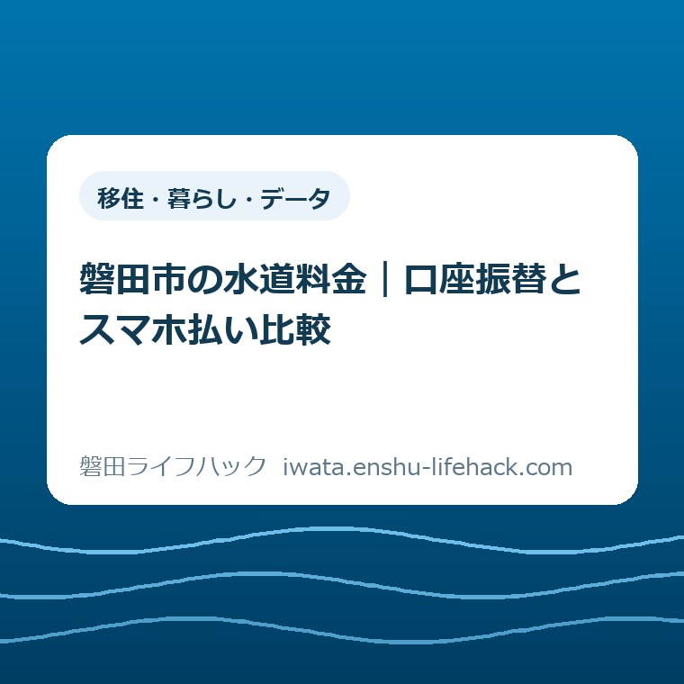
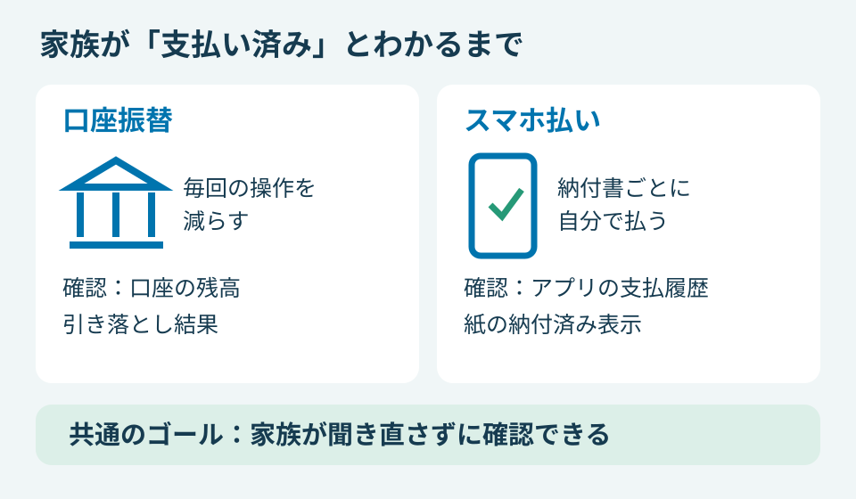
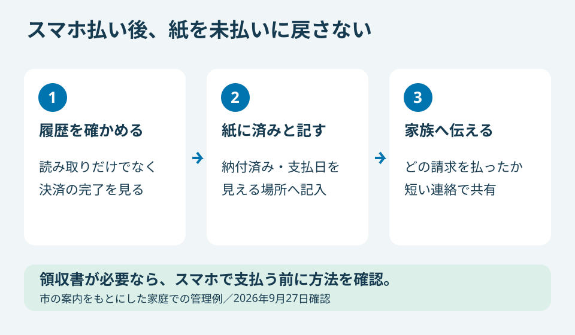

移住・暮らし・データ
磐田市の水道料金｜口座振替とスマホ払い比較

この記事の要点
Q. 水道代は口座振替とスマホ払い、家族で管理するならどちらが楽？
A. 条件は契約や納付書で異なります。毎回の支払い操作を減らすなら口座振替、納付書ごとに自分で払うならスマホ払いが候補です。ただしスマホ払いは領収書が出ず、家族への完了共有が必要です。J-Coinの収納受付は2026年8月31日23時59分に終了。今日は領収書が必要か一つ確認し、最終条件は磐田市公式ページで確かめてください。
水道料金を管理する人は、支払う前後にも働いている
磐田市の水道料金の支払い方法は、契約状況や納付書の状態によって選べる範囲が変わります。家族の分を管理している方は、封筒を開け、期限を見て、支払いを確かめるところまで引き受けています。口座振替かスマホ払いかは、その手間をどこで減らすかという比較です。
郵便を受け取る人、家計を管理する人、実際に支払う人が同じとは限りません。仕事帰りに払うつもりで納付書をかばんへ入れた後、家族が別の方法で払っていたらどうするか。これは実際の相談事例ではなく、方法を選ぶときに考えておきたい生活上の場面です。
大石浩之（磐田市／不動産業）です。私は、支払い管理を「アプリが使えるか」だけで比べたくありません。払った本人が安心できても、家族が毎回「もう払った？」と聞くなら、確認の仕事は残っています。管理してきた人の注意深さを、当たり前のものとして扱わない比較にしたいと思います。
この記事は、料金表や使用開始手続きを網羅する案内ではありません。払い忘れや二重払いを減らすため、家庭内の確認負担に絞ります。引っ越しに伴う開始・停止も必要な方は、水道・下水道の手続き案内から、支払い方法とは別に対象の届け出を確認してください。
公式情報で確認した変更と、選ぶ前の条件
磐田市「水道料金・下水道使用料などのお支払い方法」を2026年9月27日に確認しました。J-Coinでの収納受付は、2026年8月31日23時59分に終了しています。以前の案内や家族の記憶にJ-Coinが残っていても、2026年9月27日時点の選択肢には含められません。
同ページが案内するスマートフォン決済は、PayPay、d払い、au PAY、FamiPay、楽天ペイの5アプリです。納入通知書のバーコードを読み取って支払います。読み取る対象はQRコードなどの2次元コードではありません。普段の店頭の支払いと同じつもりで窓口へ行くと、方法が違います。
市は、スマートフォン決済では領収書を発行しないと明記しています。支払履歴は各アプリで確認します。領収書が必要な場合の案内先は、金融機関やコンビニエンスストアなどの窓口です。「払える」と「必要な書類を受け取れる」は別の条件になります。
納付書1枚が30万円を超える場合や、バーコードがない・読み取れない場合はスマホ払いを利用できません。FamiPayの支払金額は10万円までです。一般的な家庭の使用額をここで仮定して対象と決めず、届いた納付書の金額と印字で確認してください。
水道料金などの支払いは2カ月ごとです。納入期限・口座振替日は、検針月の翌月26日で、金融機関が休日の場合はその翌日と市が案内しています。月ごとの固定費と同じ感覚で記憶するより、実際のお知らせと納付書に記載された日を家庭の予定に移すほうが確実です。
お支払い方法のページには、確認した範囲で公表日の表示がありませんでした。この記事の2026年9月27日は情報を照合した日です。J-Coinの終了日と、市がページを公開した日を同じものとして扱ってはいません。根拠は末尾の市公式2ページから読み直せます。
口座振替とスマホ払いを、家族の確認負担で比較する
口座振替は支払いの操作を定期的な引き落としに任せ、スマホ払いは納付書ごとに操作する方法です。家族が確認する場所も、口座の取引記録とアプリの支払履歴に分かれます。次の表の家族への共有や管理の向きは、市の義務付けではなく、私の管理上の提案です。
| 比較する点 | 口座振替 | スマホ払い |
|---|---|---|
| 毎回の操作 | 登録後は口座からの引き落とし。残高と結果を確認する | 納付書ごとに読み取り、内容確認、決済を行う |
| 家族への共有 | 誰が口座の引き落としを確認するか決める | 誰が払ったか、どの納付書が済んだか伝える |
| 領収書 | 必要な証明の種類・入手方法は市へ確認する | 発行されない。必要なら市が案内する窓口払いを選ぶ |
| 切り替え | 口座振替依頼書を提出する | 口座振替中なら納付書払いへの変更手続きが必要 |
| 管理の向き | 都度の支払いを思い出す負担を減らしたい家庭 | 納付書と支払履歴を照合する担当を決められる家庭 |
口座振替を選ぶなら、引き落とす口座に残高を用意する人と、結果を見る人を決めます。引き落としに任せられるのは支払い操作であって、家庭の資金管理まで自動になるわけではありません。登録した安心感と、実際に引き落とされた確認は分けて考えます。
スマホ払いを選ぶなら、納付書を受け取ってから操作するまでの担当が必要です。自宅で払える便利さはありますが、納付書が届くたびに行う仕事は残ります。使い慣れたアプリがあることと、期限までに毎回その操作を思い出せることは、同じ能力ではありません。
家族が離れて暮らしている場合は、確認のために何を伝えるかも違います。ここで提案したいのは、口座やアプリの暗証情報を渡すことではありません。対象の請求、支払った日、完了を確かめた人がわかる短い連絡で足りるかを考えることです。
たとえば「水道代は払った」だけでは、どの家のどの請求か判別できないことがあります。自宅と実家を一緒に管理するという仮の例なら、「実家の今回の納付書、支払日、確認済み」のように対象を添えます。家族の事情に合わせた記録であり、市への提出書類ではありません。

良い点——窓口へ行く以外の選択肢がある
磐田市の水道料金は、口座振替とスマートフォン決済の両方が使えます。市は口座振替について、納付のために市役所や金融機関へ出向く必要がない方法として案内しています。
通勤や子育ての予定を動かさずに済む選択肢があることを、私はまず評価します。
口座振替の良さは、忙しい日でも納付書を持って店へ寄る用事を増やさずに済むことです。家族の誰かに「帰りにお願い」と頼む仕事も減らせます。操作を担当していた人が不在になる日を想定すると、毎回頼み直さなくてよい仕組みには生活上の価値があります。
スマホ払いの良さは、納付書の内容を自分で見て、その場で操作できることです。家を空けにくい人にとって、自宅で処理できるのは具体的な利点です。紙の納付書が届く方式を使いながら、支払いのための移動を減らせる点に意味があります。
口座振替の依頼書を手元へ取り寄せる入口もあります。市の「磐田市上下水道料金センターインターネット受付」は、口座振替依頼書送付の申し込みを対象にしています。書類をもらうための外出を一つ減らせるので、申し込みの準備から負担を軽くできます。
私は、全家庭が同じ方法へそろう必要はないと考えます。通帳や紙のお知らせで把握する家庭も、アプリの履歴を見慣れた家庭もあります。家族が確認できる方法を残したまま、不要な外出や依頼を減らせるなら、選択肢が複数ある効果は十分あります。
注文したい点——支払えた後の仕事も見える案内に
磐田市はスマホ払い後の二重支払いを防ぐため、使った納付書へ納付済みなどと記して保管するか、破棄するよう案内しています。支払いが完了しても、手元の紙の見た目が自動で変わるわけではありません。スマホで払った後にも紙の管理が残る点は、選ぶ前に知っておきたい事実です。
私は、案内の入口で「領収書は必要ですか」「家族もこの納付書を見ますか」と並べて示してほしいと思います。これは市の説明がないという指摘ではありません。注意事項に載っている条件を、利用者が方法を決める段階でも見つけやすくしてほしいという注文です。
家庭側で補うなら、完了した納付書を未払いの置き場所へ戻さないことを提案します。済んだ紙とこれから払う紙が同じ封筒にあると、別の家族が善意で支払おうとする余地が残ります。記録を増やすこと自体が目的ではなく、紙を見た人が迷わないようにするためです。
支払履歴を確認する前に、紙へ済んだ印だけを付けるのも避けたいところです。読み取っただけなのか、決済まで終わったのかを自分で確かめる必要があります。アプリの画面の名称や表示は異なるため、特定のボタンを押せば必ず完了と、この記事では一括して案内しません。
家族への連絡が負担になるなら、スマホ払いへの変更を急ぐ理由はありません。すでに口座振替で管理できている家庭には、継続する判断もあります。反対に、納付書を一人で受け取り一人で照合できるなら、スマホ払いの確認は短く済ませられるかもしれません。生活の分担を基準にします。

支払い方法を変える時期は、申し込みと完了を分ける
磐田市では、口座振替の利用者がスマホ払いをする場合、納付書払いへの変更手続きが必要です。アプリを入れるだけでは切り替わりません。市は上下水道料金センターへの連絡を案内しています。切り替えを考えた時点で、手元の請求をどの方法で払うかも確認の対象になります。
口座振替を始める場合は、口座振替依頼書を料金センターへ郵送または持参で提出します。インターネット受付の「依頼書送付」は書類を送ってもらう申し込みです。送付を頼んだだけで口座登録まで済んだ、と読み替えないようにしてください。
市のインターネット受付はメールアドレスの登録を求め、届いた入力用URLから必要事項を入力する仕組みです。家族が書類の取り寄せを手伝うなら、誰がメールを確認し、届いた依頼書を誰が扱うのかまで話しておくと、途中で止まった場所を確認できます。
申し込みから初回の引き落としまでに要する日数は、今回確認した2ページでは特定できませんでした。何日後には切り替わると決めつけず、料金センターへ対象の請求を伝えて確かめてください。依頼書を送った日を、新しい支払い方法の開始日として家族に伝えないことです。
問い合わせ先は磐田市上下水道料金センター、電話0538-58-3070です。所在地は磐田市福田400、福田支所2階です。支所へ行く用事と一緒に済ませたい方も、磐田市の4支所窓口の案内を入口にしつつ、水道料金の担当と各窓口の受付は分けて確認してください。
2026年9月27日は日曜日です。市公式の通常の電話受付は月曜から金曜の8時30分から18時、窓口は17時15分までです。日曜の今日、変更の回答を電話ですぐ得られるとは考えず、まず家庭で確認できる条件を一つ整理しておく使い方ができます。
税金も含めて家計の支払予定を見直すなら、磐田市の国保税の年金天引きと口座振替の比較で年6回・年8回の時期と残高確認の違いを確認できます。水道料金とは変更条件が異なるため、別々に確かめてください。
対案・結論——今日は領収書が必要か一つ確認する
磐田市の水道料金で口座振替とスマホ払いを比べるなら、今日の一歩は「領収書が必要か」を確かめることです。紙を保存したい気持ちと、提出先から領収書を指定されている事情を分けます。提出先がある場合は、何を証明するどの書類が必要なのか、相手の指定を確かめてください。
領収書が必要だとわかったら、スマホ払いで先に済ませない判断ができます。市は領収書が必要な場合、金融機関やコンビニなどの窓口払いを案内しています。口座振替なら希望する書類が必ず出る、とこの記事から推測せず、必要な証明と取得方法を料金センターへ確認します。
領収書が不要なら、比較を家族の確認負担へ進められます。毎回の支払い操作を減らしたいのか、納付書を見て自分で処理したいのか。その違いを話せるだけでも前進です。今日中の変更申し込みや、全員のアプリ設定まで課題にする必要はありません。
証明書を取りに行く場合も、便利な手段を選ぶ前に必要な書類を確定する順序は共通します。磐田市の証明書取得で窓口とコンビニを比べた記事では、その見方を整理しました。水道料金の領収書とは別の制度ですが、提出先の条件を先に見る考え方は役立ちます。
大石の視点——支払いの便利さは、家族の確認まで含める
水道料金の支払い方法は、家族が完了を確認する手間まで含めて決める。私はそう考えます。スマホで数回操作して終わっても、その後に別の家族が紙を探し、本人へ連絡して確かめるなら、手間が消えたのではなく担当が移っただけです。便利さを測る単位は操作した一人ではなく、管理する家族全体に置きたいのです。
私は、家族の分担を知らずに口座振替とスマホ払いのどちらが楽かを言い切ることには迷います。本人だけで完結する家計と、離れて暮らす家族の請求も見る家計では、同じ道具の使い勝手が変わるからです。その迷いを、アプリの数や新しさで埋めたくありません。
一方で、選ぶ順序は言い切れます。領収書の要否を確認する前に、支払い方法を変える必要はありません。これまで管理してきた人の負担を認め、必要な書類という一つの条件から整理する。制度の利用条件や数値は変わるため、最終的には磐田市公式ページと料金センターで確認してください。
よくある質問
J-Coinで磐田市の水道料金を払えますか？
J-Coinの収納受付は2026年8月31日23時59分に終了しました。2026年9月27日確認の市公式案内では、PayPay、d払い、au PAY、FamiPay、楽天ペイの5アプリです。以前の案内だけで判断せず、現在の市公式ページで対応アプリと納付書の利用条件を確認してください。
スマホ払いでも領収書をもらえますか？
磐田市のスマートフォン決済では領収書は発行されません。支払いは各アプリの支払履歴で確認します。領収書が必要な場合、市は金融機関やコンビニエンスストアなどの窓口払いを案内しています。アプリの履歴で提出先の条件を満たせるかを自己判断せず、必要書類を確認してから方法を選んでください。
口座振替からスマホ払いへすぐ変えられますか？
口座振替の利用中は、納付書払いへの変更手続きが必要です。アプリを入れるだけでは変わりません。磐田市上下水道料金センター（0538-58-3070）へ連絡してください。切り替えが反映される時期は個別に確認し、手元の請求をどの方法で払うかまで確かめると、家族への連絡も具体的になります。
参考にした公式情報
2026年9月27日確認。市公式「お支払い方法」は公表日表示を確認できず、「インターネット受付」は2025年2月20日更新です。
- 磐田市「水道料金・下水道使用料などのお支払い方法」（2026年9月確認）
- 磐田市「磐田市上下水道料金センターインターネット受付」（2026年9月確認）
最終確認日：2026-09-27 ／ 本記事は非公式案内です。制度・数値は変更される場合があり、利用条件は契約や納付書によって異なります。個別の支払い・切り替えは料金センターに問い合わせ、最後は磐田市公式ページでご確認ください。